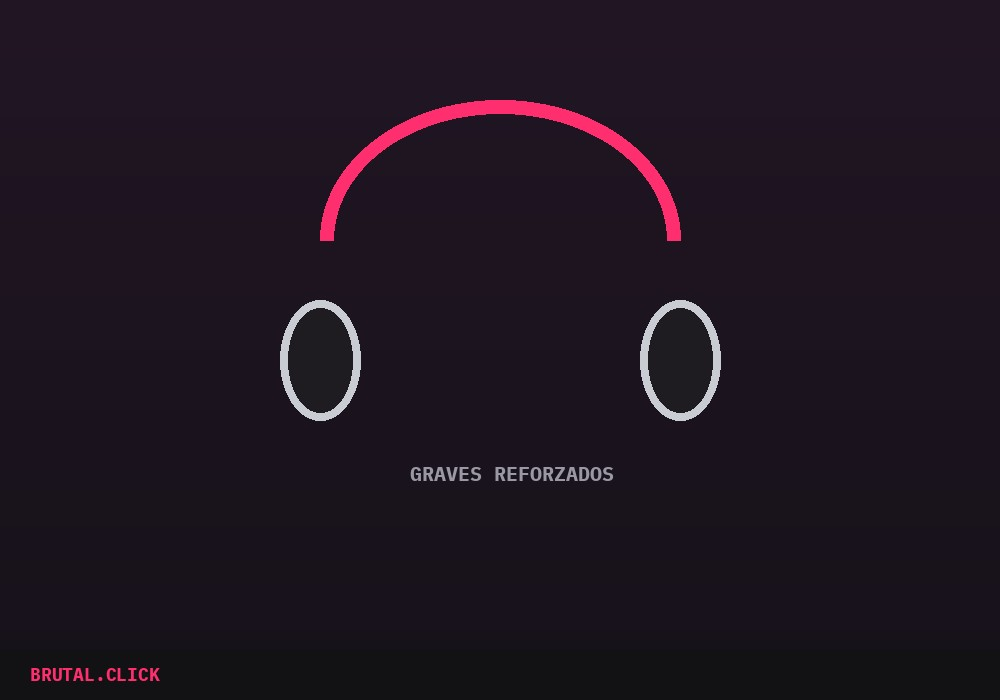

Este artículo incluye enlaces de afiliación. Si compras a través de ellos, podemos recibir una pequeña comisión sin coste extra para ti.
No todos los auriculares están hechos para el hip hop. Un modelo pensado para música clásica o para podcasts puede sonar perfectamente equilibrado y aun así dejar planos los graves que sostienen un beat — y en este género, el bajo no es un extra, es la base sobre la que se construye todo lo demás.
Lo que de verdad hay que mirar
La respuesta en graves es el primer filtro, pero no el único. Un auricular que solo suena fuerte en bajos pero pierde definición en las voces también falla — el objetivo es un sonido con graves presentes sin que se coman la claridad de la letra, que en este género suele ser tan importante como la instrumental.

El aislamiento también importa más de lo que parece: si escuchas en transporte público o en la calle, un auricular sin buen aislamiento pasivo o cancelación activa te obligará a subir el volumen para compensar el ruido exterior, lo que a la larga cansa el oído y desgasta la batería mucho más rápido.
Over-ear o in-ear: no hay respuesta única
Los over-ear suelen ofrecer mejor respuesta en graves por el mayor tamaño de driver, pero son menos prácticos para moverte por la calle. Los in-ear ganan en portabilidad y, con un buen sellado, pueden aislar sorprendentemente bien — la elección depende más de tu rutina diaria que de una superioridad técnica de un formato sobre otro.
Auriculares over-ear con graves reforzados
Pensados para bajos con presenciaAuriculares in-ear con cancelación de ruido
Para el metro, el bus o la calleEnlaces pendientes de activar el programa de afiliados.